9 Tutorial: Data visualization with ggplot
After working through Tutorial 9, you’ll…
- know what each graphical component of a ggplot graph contributes to the final visualization
- understand the
grammer of graphics(or simply: the ggplot2 syntax) to combine graphical components - know how to make your own data visualizations using
ggplot2
9.1 Why not stick with Base R?
The ggplot2 package, i.e. the data visualization package of tidyverse, has become the R package for data visualization. While Base R can be used to visualize data, the ggplot2 package makes data visualization so much easier that I recommend starting with ggplot2 right away and skipping data visualization in Base R altogether.
The gg in ggplot2 stands for grammar of graphics, which means that we can describe each component of a graph layer by layer and component by component. You only have to provide ggplot() with a source object (i.e. data) and specify what variables it should map to the aesthetical attributes (color, shape, size) of certain geometric objects (points, lines, bars) – and ggplot will take care of the rest! The inventor of ggplot2, Hadley Wickham, describes the benefits of ggplot2 like this:
“In order to unlock the full power of ggplot2, you’ll need to master the underlying grammar. By understanding the grammar, and how its components fit together, you can create a wider range of visualizations, combine multiple sources of data, and customise to your heart’s content… The grammar makes it easier for you to iteratively update a plot, changing a single feature at a time. The grammar is also useful because it suggests the high-level aspects of a plot that can be changed, giving you a framework to think about graphics, and hopefully shortening the distance from mind to paper. It also encourages the use of graphics customised to a particular problem, rather than relying on specific chart types.” (Wickham et al., 2021, no page; bold words inserted)
Just as dplyr simplifies data manipulation, ggplot2 simplifies data visualization. In addition, ggplot2 and dplyr work hand in hand: You can prepare your data selection and manipulation with dplyr and pipe it directly into ggplot to turn your transformed data into a beautiful graph.
With only a few lines of code, you can produce graphs like this one:
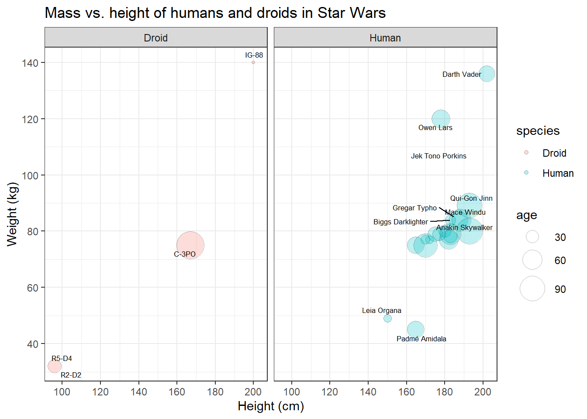
This is the code. Right now, it might still look a bit overwhelming to you, but once you’ve understood the grammar of graphics, it really is a just a small jigsaw puzzle. Moreover, you don’t usually start with graphs that are this complicated, but with basic scatter or bar plots.
library(ggplot2)
plot <- starwars_data %>%
filter(species == "Human" | species == "Droid") %>%
ggplot(aes(x = height, y = mass, size = birth_year, fill = species)) +
geom_point(shape = 21, alpha = 0.25, color = "black") +
scale_y_continuous(limits = c(30, 140)) +
scale_x_continuous(limits = c(90, 210)) +
scale_y_continuous(breaks = c(40, 60, 80, 100, 120, 140, 160)) +
scale_x_continuous(breaks = c(100, 120, 140, 160, 180, 200)) +
scale_size(range = c(1, 11), name = "age") +
ggrepel::geom_text_repel(aes(label = name), size = 2.3) +
theme_bw() +
labs(title = "Mass vs. height of humans and droids in Star Wars",
x = "Height (cm)", y = "Weight (kg)") +
facet_wrap(~species)To visit the official documentation of ggplot2:
- type ?ggplot2 in your console
- visit the ggplot documentation
- visit the ggplot homepage of the tidyverse
9.2 Components of a ggplot graph
As mentioned before, the main idea behind ggplot is to generate a statistical plot by combining layers that represent geometric objects (e.g. points and lines). By linking data to the aesthetic features of these geometric objects (e.g. colors, size, transparency), the aesthetic properties of the geometric objects may be controlled. In the words of Wickham:
“A graphic maps the data to the aesthetic attributes (colour, shape, size) of geometric objects (points, lines, bars).” Wickham et al., 2021, no page; bold words inserted
| Image: The logic of adding layer by layer in ggplot (Source: R @ Ewah 2020): |
| 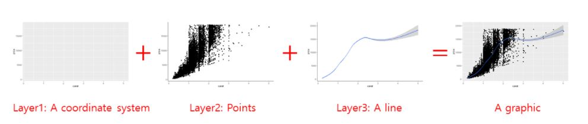 |
The necessary components of a ggplot graph are:
- Source object /
data: The data that you would like to visualize. - Geometries
geom_: Geom options allow you to specify what geometric objects will represent the data (i.e. points, bars, lines, and many more). - Aesthetics
aes(): Aesthetics allows you to map variables to the x- and y-axis and to the aesthetics of those geometric objects (i.e. position, color, size, shape, linetype, and transparency).
The complementary, but not necessary components of a ggplot graph are:
- Scales
scale_: Scale options allow you to fine-tune the mapping from the variables to the aesthetics. You can fine-tune axis limits, tick breaks, grid lines, or any other axis/geometric object transformations that depend on the range of a specific scale. - Statistical transformations
stat_: Allows you to produce statistical summaries of the data for visualization (i.e. means and standard deviations, fitted curves, and many more). - Coordinate system
coord_: Allows you to change the appearance of your coordinate system (i.e. flip the coordinates to turn horizontal bar chart into a vertical one). - Position: to adjust overlapping objects, e.g. jittering, stacking or dodging.
- Facets
facet_: Allows you to divide your plot into multiple subplots. - Visual themes
theme(): Allows you to specify the visual basics of a plot, such as background, default typeface, sizes, and colors. - Axis labels
labs(): Allows you to change the plot’s main title and the axis labels.
9.3 Installing & activating ggplot
You can always activate ggplot2 by activating the meta-package tidyverse:
library(tidyverse)If for some reason you do not want to activate the whole tidyverse, you should install ggplot2 and activate this package separately:
install.packages("ggplot2") # install the package (only on the first time)library(ggplot2) # active the package9.4 Building your first plot
In the next sections, you will create your very first plot – layer by layer. We will look at some of the most important components that you will regularly add to graphs and you will learn how to make use of them.
9.4.1 Data
Obviously, you need data to perform data visualization. Therefore, our first step is to load the starwars data, but let’s keep only humans and droids for now. To this end, assign your transformed data to a new data frame called human_droid_data.
human_droid_data <- dplyr::starwars %>%
filter(species == "Human" | species == "Droid")The function ggplot() can only create a plot if we explicitly tell the function what data to use, so this graphical component is necessary. Using our dplyr skills, let’s use the human_droid_data as our source object and apply the ggplot() function to it by using a pipe (i.e. %>%).
human_droid_data %>%
ggplot()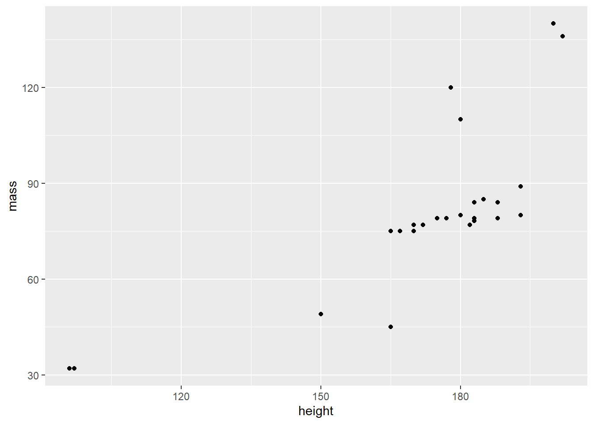
The ggplot() function creates a blank canvas (i.e. first layer). We now have to draw on it.
9.4.2 Aesthetics
To draw on this blank canvas, we must at least tell the ggplot() function which variables to assign to the x- and y-axis by using the aes() function. Thus, the Aesthetics graph component is also necessary in every single plot.
human_droid_data %>%
ggplot(aes(x = height, y = mass))
The aes() function allows you to specify the following arguments (and many more, as you will learn over time):
- x: the variable that should be mapped to the x axis
- y: the variable that should be mapped to the y
- size: the variable that should be used for determining the size of a geometric object
- fill: the variable that should be used for filling a geometric object with a specific color
- color: the variable that should be used for outlining a geometric object with a specific color
9.4.3 Geometrics
Finally, we can turn to the last necessary component of any ggplot graph: the geometric objects that fill your canvas. The choice of these geometric objects determines what kind of chart you create.
The geom_ component of the ggplot() function allows you to create the following chart types (and many more, as you will learn over time):
- geom_bar(): to create a bar chart
- geom_histogram: to create a histogram
- geom_line(): to create a line graph
- geom_point(): to create a scatter or bubble plot
- geom_boxplot(): to create a box plot
Now let’s add the data points (x,y) with geom_point() to our canvas to make it a scatter plot:
human_droid_data %>%
ggplot(aes(x = height, y = mass)) +
geom_point()That’s a scatter plot for sure! And you only needed three necessary components to create it:
- data (i.e. a source object),
- aesthetics
aes(), - and geometric objects
geom_.
9.4.4 Scales
A scale is a mapping from data to the final values that computers can use to actually show the aesthetics. In this sense, a scale regulates the aesthetic mapping of variables to aesthetics. Providing a scale_ is not necessary to create a graph, but it allows you to fine-tune aesthetic mappings to customize your graph. scale_ is very powerful and over time, you will learn about a lot of things that you can customize with it. For now, we will only focus on a few of these.
We will use scale_ to :
- change the limits and ticks of the x and y axis
- change how a third variable (besides x and y) is mapped to the aesthetics of our geometric object
First, we will use scale_ to modify the x and the y axis by providing the graph with new axis limits.
human_droid_data %>%
ggplot(aes(x = height, y = mass)) +
geom_point() +
scale_y_continuous(limits = c(30, 140)) + # modify the y axis limits
scale_x_continuous(limits = c(90, 210)) # modify the x axis limitsSecond, we’ll add more ticks to make the graph better readable.
human_droid_data %>%
ggplot(aes(x = height, y = mass)) +
geom_point() +
scale_y_continuous(limits = c(30, 140)) +
scale_x_continuous(limits = c(90, 210)) +
scale_y_continuous(breaks = c(40, 60, 80, 100, 120, 140, 160)) + # choose where the ticks of the y axis appear
scale_x_continuous(breaks = c(100, 120, 140, 160, 180, 200)) # choose where the ticks of the x axis appear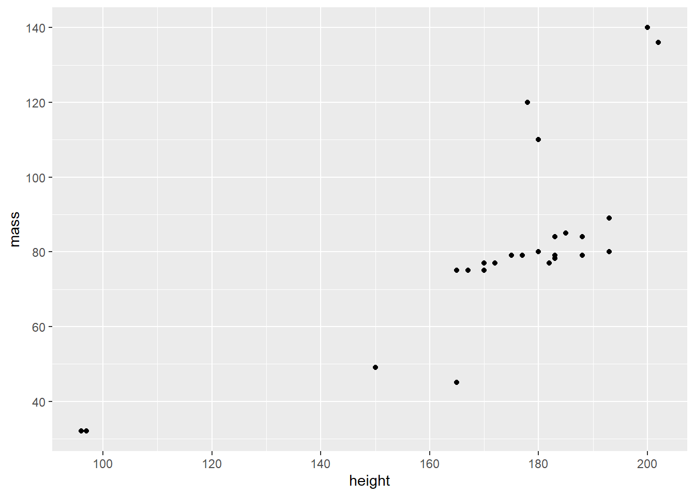
Until now, we have used scale_ to transform only the axes. But we can also use it to change the mapping of variables to geometric objects. To demonstrate this, we now add another variable to our graph, namely the age (birth_year) of the humanoid and droid Star Wars characters. Let’s map age to our data points (i.e. geom_point()) so that larger bubbles reflect older age.
human_droid_data %>%
ggplot(aes(x = height, y = mass, size=birth_year)) + # map birth_year (age) to the size of the following geometric objects
geom_point() +
scale_y_continuous(limits = c(30, 140)) +
scale_x_continuous(limits = c(90, 210)) +
scale_y_continuous(breaks = c(40, 60, 80, 100, 120, 140, 160)) +
scale_x_continuous(breaks = c(100, 120, 140, 160, 180, 200)) 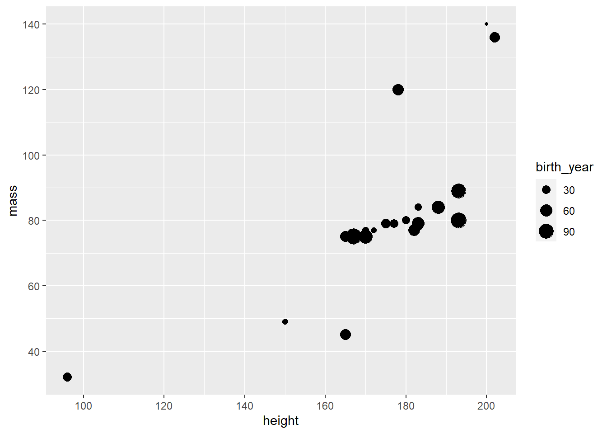
Personally, I feel like these bubbles could use a little bit of rescaling to make age differences stand out more. In addition, you could get a nicer title for the size legend than “birth_year”. Let’s try that.
human_droid_data %>%
ggplot(aes(x = height, y = mass, size=birth_year)) +
geom_point() +
scale_y_continuous(limits = c(30, 140)) +
scale_x_continuous(limits = c(90, 210)) +
scale_y_continuous(breaks = c(40, 60, 80, 100, 120, 140, 160)) +
scale_x_continuous(breaks = c(100, 120, 140, 160, 180, 200)) +
scale_size(range = c(1, 11), name = "age") # sets the bubbles' size in a range between 1 and 11 and renames the respective legend title to "age"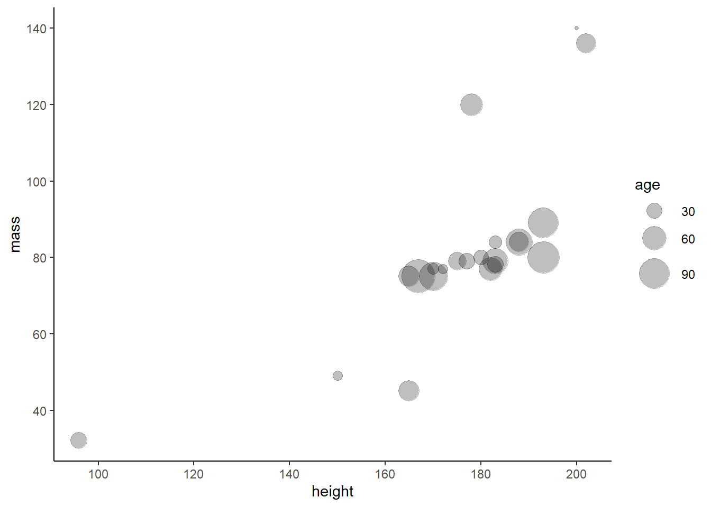
Perfect! The legend spells “age” and age differences seem a bit more obvious now. Unfortunately, some data points are now overlapping.
I think this is a good time to introduce you to the differences between using scale_ and adding aesthetics to the geom_ objects directly. While the former allows you to change the mapping from variables to the aesthetics of geometric objects, the latter one allows you to provide a constant. This means that the aesthetic mapping does not depend on the values of a variable, but is set to a single default value. To demonstrate this and fix the overlap of our bubbles, we change the transparency value of the bubbles so that they become transparent. Note that all the values given are constants, which means that they do not depend on a third variable like birth_year.
human_droid_data %>%
ggplot(aes(x = height, y = mass, size=birth_year)) +
geom_point(shape = 21, fill = "black", alpha = 0.25, color = "black") + # shape = 21 is creating bubbles that have a border (i.e. outline), fill = "black" fills the bubble with black ink, alpha = 0.25 to make the bubbles` black ink 25% transparent and color = "black" to make the border (i.e. outline) pitch black
scale_y_continuous(limits = c(30, 140)) +
scale_x_continuous(limits = c(90, 210)) +
scale_y_continuous(breaks = c(40, 60, 80, 100, 120, 140, 160)) +
scale_x_continuous(breaks = c(100, 120, 140, 160, 180, 200)) +
scale_size(range = c(1, 11), name = "age")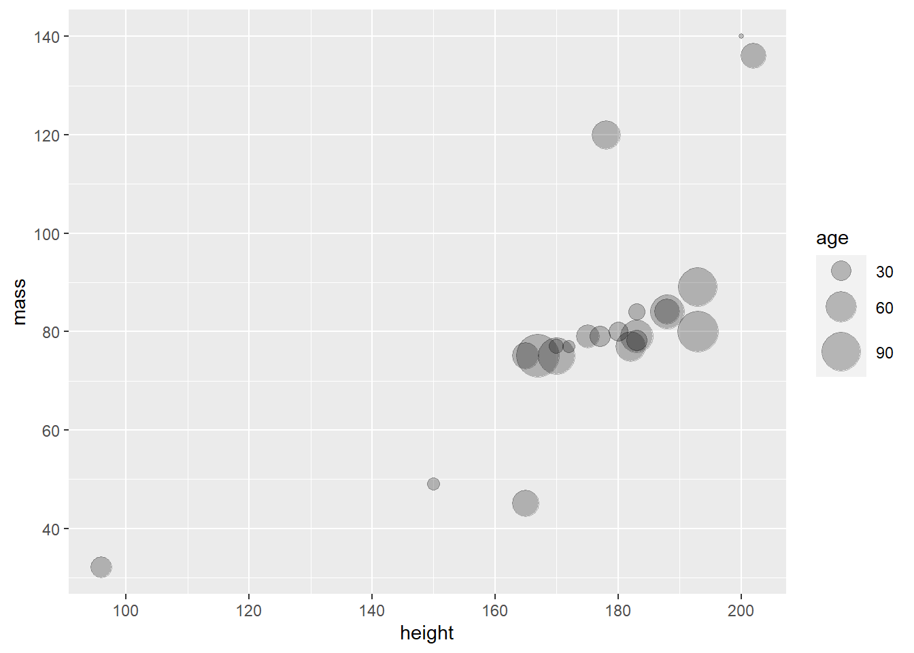
This looks way more readable. I think we are ready to move on to Themes.
9.4.5 Themes
Just like scale_, theme_is an optional ggplot component, i.e. not necessary. Themes are visually appealing presets for charts, e.g., they influence whether grid lines are visible or whether certain color palettes are applied to the data. By using themes you can make your graphs more beautiful and give them a consistent style without any effort, which is especially useful for longer texts like theses. To familiarize yourself with the various options, take a look at this overview of all ggplot2 themes.
If you don’t like grid lines, for example, theme_classic() might be to your taste:
human_droid_data %>%
ggplot(aes(x = height, y = mass, size=birth_year)) +
geom_point(shape = 21, fill = "black", alpha = 0.25, color = "black") +
scale_y_continuous(limits = c(30, 140)) +
scale_x_continuous(limits = c(90, 210)) +
scale_y_continuous(breaks = c(40, 60, 80, 100, 120, 140, 160)) +
scale_x_continuous(breaks = c(100, 120, 140, 160, 180, 200)) +
scale_size(range = c(1, 11), name = "age") +
theme_classic()Personally, I really enjoy the theme_bw() (black-and-white theme). So let’s apply it to our graph:
human_droid_data %>%
ggplot(aes(x = height, y = mass, size=birth_year)) +
geom_point(shape = 21, fill = "black", alpha = 0.25, color = "black") +
scale_y_continuous(limits = c(30, 140)) +
scale_x_continuous(limits = c(90, 210)) +
scale_y_continuous(breaks = c(40, 60, 80, 100, 120, 140, 160)) +
scale_x_continuous(breaks = c(100, 120, 140, 160, 180, 200)) +
scale_size(range = c(1, 11), name = "age") +
theme_bw()9.4.6 Labs
Again, labs() is not a necessary, but an optional component of your graph. Using the labs() function allows you to set a main title for your plot and to change the labels of the x and y axis.
Let’s try it:
human_droid_data %>%
ggplot(aes(x = height, y = mass, size=birth_year)) +
geom_point(shape = 21, fill = "black", alpha = 0.25, color = "black") +
scale_y_continuous(limits = c(30, 140)) +
scale_x_continuous(limits = c(90, 210)) +
scale_y_continuous(breaks = c(40, 60, 80, 100, 120, 140, 160)) +
scale_x_continuous(breaks = c(100, 120, 140, 160, 180, 200)) +
scale_size(range = c(1, 11), name = "age") +
theme_bw() +
labs(title = "Mass vs. height of humans and droids in Star Wars",
x = "Height (cm)", y = "Weight (kg)")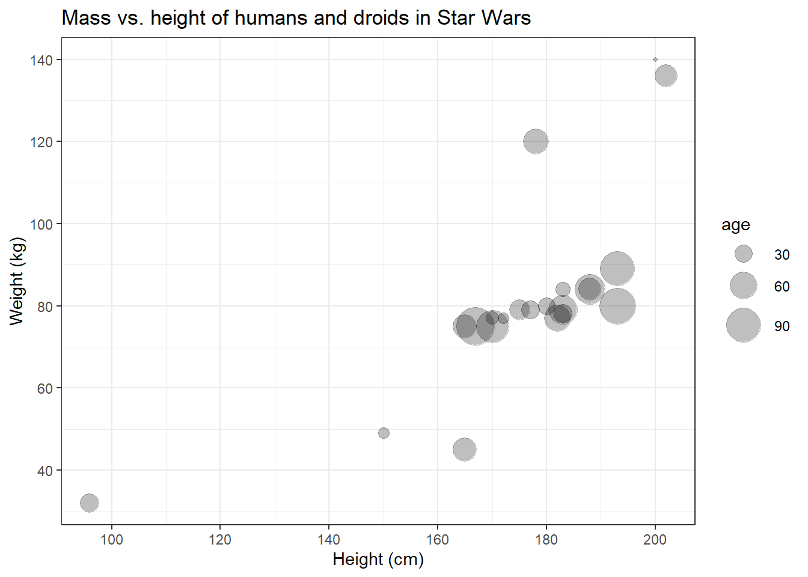
Now that we’ve added a main title, it becomes clear that we can’t really distinguish the data points that represent humans from those that represent droids.
9.4.7 Facets
Faceting divides plot into tiny subplots, which display different subsets of your data. Facets are an effective way to explore your data because they allow you to rapidly detect divergent patterns in these subsets. Of course, faceting is optional, i.e. not necessary. You don’t need faceting if you don’t want to compare different groups within your data.
The two approaches to faceting are:
facet_wrap(): uses the levels of one (or more) variable(s) to create groups + panels for each group; useful if you have a single categorical variable with many levelsfacet_grid(): produces a matrix of panels defined by two variables which form the rows and columns
| Image: The logic of faceting (Source: Wickham et al., 2021): |
 |
Let’s use the facet_wrap() function to create two subplots for our two different levels of the species variable: Droid and Human. You can provide two arguments to facet_wrap():
~, followed by the grouping variablenrow: the number of rows in which panels should be placed
human_droid_data %>%
ggplot(aes(x = height, y = mass, size=birth_year)) +
geom_point(shape = 21, fill = "black", alpha = 0.25, color = "black") +
scale_y_continuous(limits = c(30, 140)) +
scale_x_continuous(limits = c(90, 210)) +
scale_y_continuous(breaks = c(40, 60, 80, 100, 120, 140, 160)) +
scale_x_continuous(breaks = c(100, 120, 140, 160, 180, 200)) +
scale_size(range = c(1, 11), name = "age") +
theme_bw() +
labs(title = "Mass vs. height of humans and droids in Star Wars",
x = "Height (cm)", y = "Weight (kg)") +
facet_wrap(~species, nrow=2) # using ~grouping_variable and nrow = 2 shows the two panels on top of each other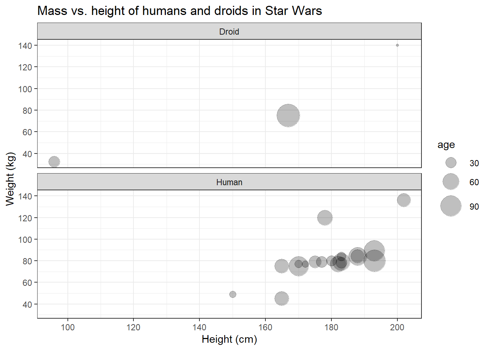
Great, finally we can distinguish the data points representing humans from those representing droids! On the left side, however, the panel with the humans looks a bit empty. Maybe we should put them next to each other.
human_droid_data %>%
ggplot(aes(x = height, y = mass, size=birth_year)) +
geom_point(shape = 21, fill = "black", alpha = 0.25, color = "black") +
scale_y_continuous(limits = c(30, 140)) +
scale_x_continuous(limits = c(90, 210)) +
scale_y_continuous(breaks = c(40, 60, 80, 100, 120, 140, 160)) +
scale_x_continuous(breaks = c(100, 120, 140, 160, 180, 200)) +
scale_size(range = c(1, 11), name = "age") +
theme_bw() +
labs(title = "Mass vs. height of humans and droids in Star Wars",
x = "Height (cm)", y = "Weight (kg)") +
facet_wrap(~species) # nrow=1 is the default, so you don´t have to call it explicitly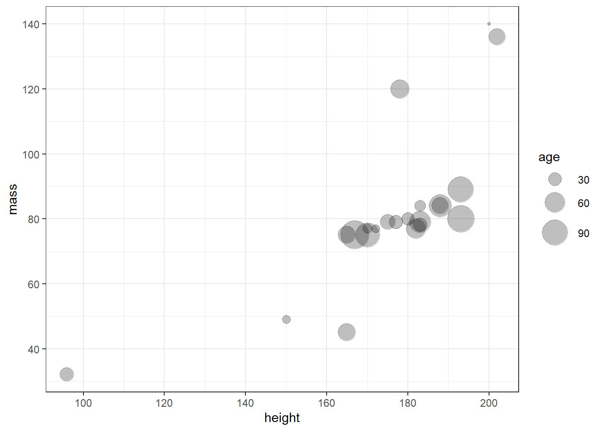
I like that!
9.4.8 Saving graphs
I think it’s time that we save this plot. To finish of this “masterpiece” (and make it less triste), let’s add some final colors before saving. We’ll fill our bubbles with colorful ink based on the species variable, so we need to add fill=species to the aes() and remove the default black ink provided in the geom_point() function.
human_droid_data %>%
ggplot(aes(x = height, y = mass, size=birth_year, fill=species)) +
geom_point(shape = 21, alpha = 0.25, color = "black") +
scale_y_continuous(limits = c(30, 140)) +
scale_x_continuous(limits = c(90, 210)) +
scale_y_continuous(breaks = c(40, 60, 80, 100, 120, 140, 160)) +
scale_x_continuous(breaks = c(100, 120, 140, 160, 180, 200)) +
scale_size(range = c(1, 11), name = "age") +
theme_bw() +
labs(title = "Mass vs. height of humans and droids in Star Wars",
x = "Height (cm)", y = "Weight (kg)") +
facet_wrap(~species)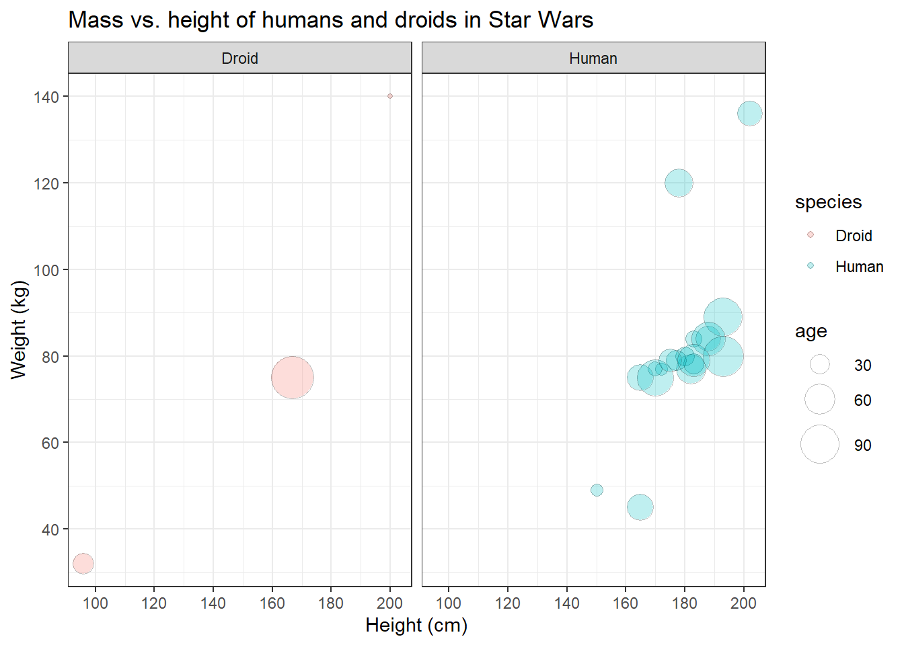
Congratulations! You have just managed to recreate the plot from the beginning of this tutorial! The only thing we haven’t covered yet is the labeling of all data points, because for that you’d need the ggrepel package to not mess up the labels - and that’s not part of ggplot2. So let’s skip that and save our graph.
To use your graph in another document, e.g. a theses written in Word, you’ll have to export the plot first. Therefore, you must assign your plot to a new object and call the ggsave() function on that object. The plot will be saved to your working directory and formatted according to the file extension you specified (for example: .jpeg or .png).
plot <- human_droid_data %>%
ggplot(aes(x = height, y = mass, size=birth_year, fill=species)) +
geom_point(shape = 21, alpha = 0.25, color = "black") +
scale_y_continuous(limits = c(30, 140)) +
scale_x_continuous(limits = c(90, 210)) +
scale_y_continuous(breaks = c(40, 60, 80, 100, 120, 140, 160)) +
scale_x_continuous(breaks = c(100, 120, 140, 160, 180, 200)) +
scale_size(range = c(1, 11), name = "age") +
theme_bw() +
labs(title = "Mass vs. height of humans and droids in Star Wars",
x = "Height (cm)", y = "Weight (kg)") +
facet_wrap(~species)
ggsave(filename = "mass_vs_height.jpeg", plot)9.5 Other common plot types
I can’t give an overview of all possible types of plots, but I can at least touch a bit on how other common types of geom_ behave.
9.5.1 bar plots
Bar plots are very common. They are either (1) used to display the frequency with which a certain factor level of a categorical variable occurs or (2) to display relationships between a categorical variable and a metric variable.
So let’s create a quick bar plot using the sex variable (categorical, three factor levels) and get an overview on how many human and droidic Star Wars characters are male, female, or do not have a sex.
human_droid_data %>%
ggplot(aes(x = sex)) + # We only have to specify the variable that we want to get the count for (i.e. number of observations)
geom_bar()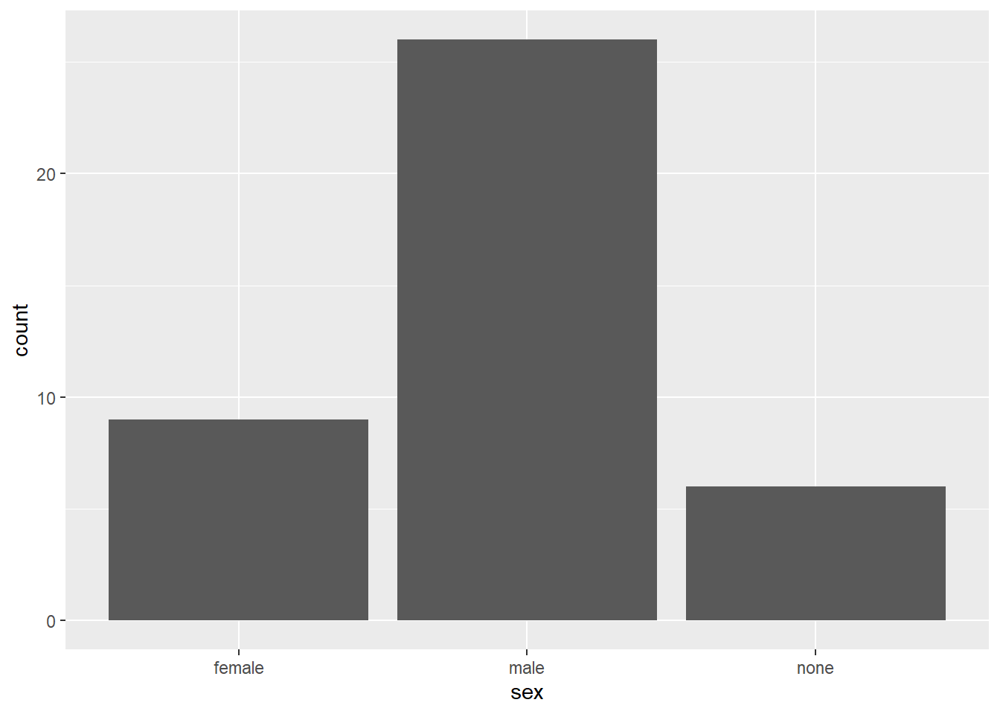
Next, let’s look at the relationship between sex and the height (metric) variable. We will produce a bar plot that displays the mean height of each group:
human_droid_data %>%
ggplot(aes(x = sex, y=height)) + # Now we need to specify the variable that we want to summarize with mean statistics
geom_bar(stat = "summary", fun.y = "mean") # apply the summary statistic of y (mean) to the geom_bars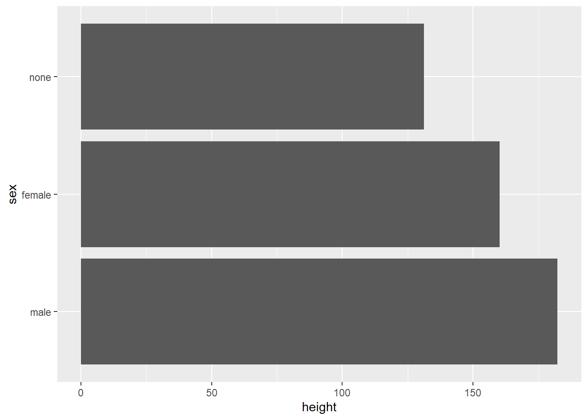
Maybe we want to sort the bars according to their mean. Let’s reorder the factor levels manually.
human_droid_data %>%
mutate(sex = factor(sex, levels = c("male", "female", "none"))) %>%
ggplot(aes(x = sex, y=height)) +
stat_summary(geom = "bar", fun = "mean")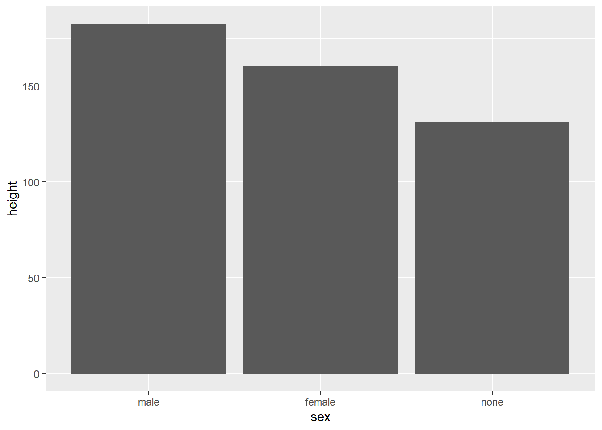
And if we would like to have a horizontal bar plot, we can use the coord_ component of ggplot() to flip the coordinates.
human_droid_data %>%
mutate(sex = factor(sex, levels = c("male", "female", "none"))) %>%
ggplot(aes(x = sex, y=height)) +
stat_summary(geom = "bar", fun = "mean") +
coord_flip()9.5.2 box plots
Box plots are a great option to summarize metric variables (by groups). They provide you with the Five-number-summary:
- the sample minimum (smallest observation) – lower whisker
- the lower quartile – lower end of the box
- the median (the middle value) – thick black line
- the upper quartile – upper end of the box
- the sample maximum (largest observation) – upper whisker
Let’s create box plots of the height for human and droidic Star Wars characters who are male, female, or do not have a sex.
human_droid_data %>%
ggplot(aes(x = sex, y=height)) +
geom_boxplot()
9.6 Take Aways
- graph creation:
ggplot() - mapping variables to aesthetics:
aes(x, y, color, fill, size, etc.) - chart type:
geom_bar(),geom_line(),geom_point(),geom_boxplot()(for example) - titles:
labs() - axis limits/ticks:
scale_x_continuous(),scale_y_continuous() - mapping variables to geom size:
scale_size() - themes:
theme_classic(),theme_light(),theme_bw()(for example) - faceting:
facet_wrap()orfacet_grid - save images:
ggsave()
9.7 More tutorials on this
You still have questions? The following tutorials & papers can help you with that:
- Chang, W. R (2021). R Graphics Codebook. Practical Recipes for Visualizing Data. Link
- Wickham, H., Navarro, D., & Pedersen, T. L. (2021). ggplot2: elegant graphics for data analysis. Online, work-in-progress version of the 3rd edition. Link
- Hehman, E., & Xie, S. Y. (2021). Doing Better Data Visualization. Advances in Methods and Practices in Psychological Science. DOI: 10.1177/25152459211045334 Link
- R Codebook by J.D. Long and P. Teetor, Tutorial 10
Now let’s see what you’ve learned so far: Exercise 3: Test your knowledge.